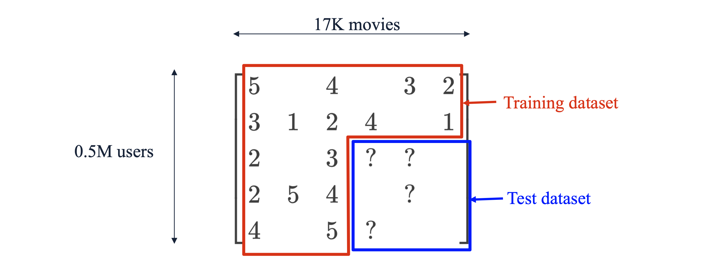

1. Introduction: 넷플릭스 챌린지(The Netflix Challenge)
지난 포스트에서는 추천 시스템의 양대 산맥 중 하나인 협업 필터링(Collaborative Filtering)의 수학적 원리와 한계점을 살펴보았습니다. 이번 시리즈의 마지막 포스트에서는 이러한 추천 시스템 알고리즘들이 현실 세계에서 어떻게 발전하고 검증되었는지를 잘 보여주는 역사적인 사건, 넷플릭스 챌린지(The Netflix Challenge, 2006) 에 대해 다루겠습니다.
2006년, 글로벌 스트리밍 기업 넷플릭스는 자사의 기존 영화 추천 알고리즘인 “CineMatch”의 예측 성능을 10% 이상 향상시키는 팀에게 100만 달러($1M) 의 상금을 주겠다는 파격적인 대회를 개최했습니다. 전 세계 2,700개 이상의 팀이 참여한 이 대회는 추천 시스템 및 기계학습(Machine Learning) 분야의 폭발적인 연구 발전을 이끌어냈으며, 시작된 지 약 3년 만인 2009년 “BellKor”s Pragmatic Chaos” 팀이 최종 우승을 차지하며 마무리되었습니다.
2. 문제 정의와 데이터셋 구조
- 대회의 목표는 극단적으로 희소한(Sparse) 유틸리티 행렬(Utility Matrix)의 빈칸, 즉 “사용자가 아직 보지 않은 영화에 대해 내릴 평점”을 정확히 예측하는 것이었습니다.
2.1. 데이터셋 규모 (Training and Test Data)
- 넷플릭스가 공개한 데이터셋은 당시로서는 전례 없는 거대한 규모였습니다.
- 학습 데이터 (Training data): 2000년부터 2005년까지 6년간 수집된 약 48만 명(480K)의 사용자가 1만 8천 개(18K)의 영화에 대해 남긴 1억 개(100M)의 1~5점 평점 데이터.
- 테스트 데이터 (Test data): 각 사용자가 평가한 기록 중 가장 마지막에 평가한 몇 개의 평점들을 따로 떼어내어 구성한 약 280만 개(2.8M)의 데이터 세트. 이는 모델 학습에 절대 사용되지 않으며 오직 모델의 성능을 평가하는 정답지 역할을 합니다.

2.2. 일반화(Generalization) 모델링
이 챌린지의 본질은 주어진 데이터 내에서 패턴을 찾는 전통적인 데이터 마이닝(예: 군집화, 빈발 항목 집합 찾기, 차원 축소)과는 결이 다릅니다. 핵심은 주어진 1억 개의 데이터를 바탕으로, 모델이 단 한 번도 본 적 없는 미래의 데이터(Unseen data)에 대해 얼마나 잘 일반화(Generalizing)하여 예측할 수 있는가를 겨루는 전형적인 기계학습(Machine learning) 태스크였습니다.
대회 환경이었기 때문에, 알고리즘이 얼마나 빠르게 동작하는지(Running time)나 확장성(Scalability)보다는 오직 예측의 정확도(Performance) 그 자체가 가장 중요한 평가 기준이 되었습니다.
3. 평가 지표: 평균 제곱근 오차 (RMSE)
- 모델이 테스트 데이터의 평점을 얼마나 정확하게 예측했는지 측정하기 위해 대회 측은 RMSE (Root Mean Square Error) 를 공식 평가 지표로 채택했습니다. \[RMSE = \sqrt{\frac{1}{|T|} \sum_{(x,i) \in T} (r_{xi} - \hat{r}_{xi})^2}\]
- \(T\): 테스트 데이터 세트 (Test set)
- \(|T|\): 테스트 데이터의 총개수 (약 2.8M)
- \(r_{xi}\): 사용자 \(x\)가 아이템 \(i\)에 남긴 실제 평점 (Ground Truth)
- \(\hat{r}_{xi}\): 알고리즘이 예측한 사용자 \(x\)의 아이템 \(i\)에 대한 예측 평점 (Prediction)
- 실제 평점과 예측 평점의 차이(오차)를 제곱하여 모두 더한 뒤 평균을 내고 루트를 씌운 값입니다. 오차를 제곱하기 때문에, 예측이 실제 값에서 크게 빗나갈수록(Outliers) 페널티를 기하급수적으로 강하게 부여하는 특징이 있습니다. 당시 넷플릭스의 자체 시스템인 CineMatch의 베이스라인 RMSE는 0.9514였습니다.
4. 넷플릭스 챌린지가 남긴 핵심 교훈 (Key Takeaways)
- 3년간 수많은 천재들이 경쟁하며 남긴 연구 결과들은 오늘날 추천 시스템 설계의 근간이 되는 중요한 교훈들을 남겼습니다.
4.1. 단순한 휴리스틱(Naive Approach)의 놀라운 위력
- 고도로 복잡한 수학적 모델을 만들기 전, 데이터를 기반으로 한 단순한 통계적 접근을 이기는 것은 생각보다 매우 어렵습니다. 가장 직관적이고 단순한 베이스라인(Naive approach) 예측 모델은 다음과 같습니다. \[\hat{r}_{ui} = \frac{\mu_u + \mu_i}{2}\]
- \(\mu_u\): 해당 사용자 \(u\)가 모든 영화에 대해 부여한 평균 평점 (사용자가 평점을 후하게 주는지 짜게 주는지 반영)
- \(\mu_i\): 해당 영화 \(i\)가 모든 사용자로부터 받은 평균 평점 (영화 자체의 대중적 완성도 반영)
- 즉, “이 영화의 평균 평점과 이 사람의 평균 평점의 중간값”을 예측치로 삼는 이 지극히 단순한 공식은 놀랍게도 넷플릭스 자체 개발 알고리즘이었던 CineMatch와 비교했을 때 성능 차이가 불과 3% 밖에 나지 않았습니다. 베이스라인 모델을 탄탄하게 구축하는 것이 얼마나 중요한지 보여주는 대목입니다.
4.2. 보조 데이터(Auxiliary Data)의 실효성
- 유틸리티 행렬(평점 데이터) 외에 추가적인 정보를 결합하면 성능이 오를 것이라 많은 이들이 예상했습니다.
- 영화 메타데이터 (실패): IMDB 등에서 감독, 배우, 장르 등의 정보를 가져와 콘텐츠 기반 추천 방식을 결합하려 했으나 성능 향상에 크게 기여하지 못했습니다. (데이터가 유용한 정보력을 제공하지 못했음)
- 시간의 흐름 데이터 (성공): 반면, 시간(Time) 정보는 매우 유효했습니다. 특정 영화의 평점이 개봉 직후에는 높았다가 시간이 지나면서 낮아지는 현상(혹은 그 반대) 등 시간에 따른 평점의 트렌드 변화를 모델링한 팀들은 유의미한 성능 향상을 이뤄냈습니다.
4.3. 결국 승리는 앙상블(Ensemble) 기법으로
대회 1위 팀(BellKor”s Pragmatic Chaos)과 2위 팀(The Ensemble)의 공통점은 하나의 완벽한 마스터 알고리즘을 개발한 것이 아니라, 서로 독립적으로 개발된 수백 개의 다양한 추천 알고리즘들을 융합(Blend)한 앙상블 모델을 사용했다는 점입니다.
기저에 깔린 모델들이 각기 다른 데이터의 패턴(어떤 모델은 User-User CF, 어떤 모델은 Matrix Factorization 등)을 포착하기 때문에, 이들의 예측값을 잘 조합하면 단일 모델의 한계를 극복하고 예측력을 극대화할 수 있습니다.
- 한계점: 비록 예측 성능은 극대화되지만, 모델이 수백 개 얽혀 있어 “왜 이런 추천이 나왔는지” 해석(Interpretation)하기가 매우 어려워지며, 실시간 서비스에 적용하기에는 막대한 컴퓨팅 연산(Extensive computation) 비용이 발생한다는 단점이 있습니다.